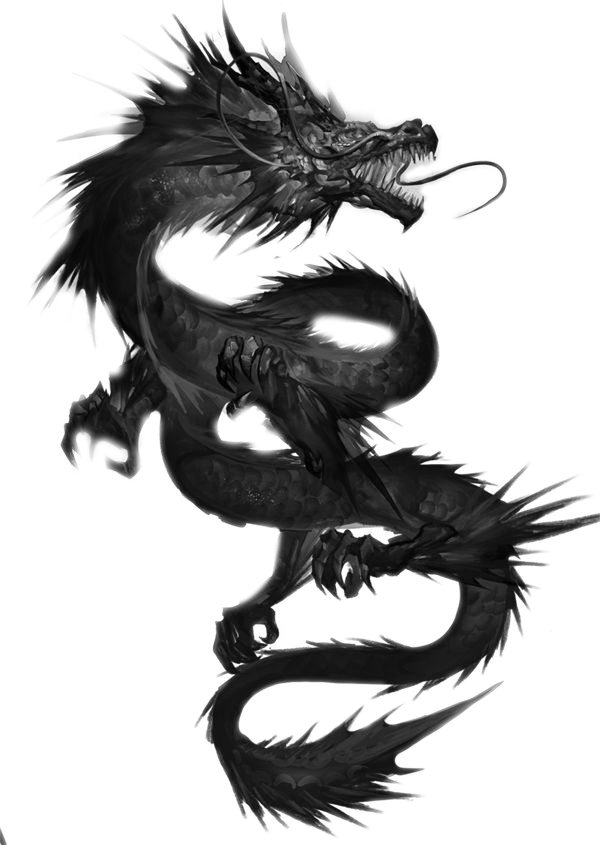
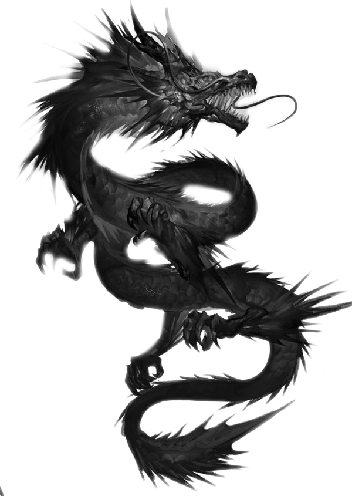

O dracích
Draci jsou legendární tvorové, kteří se objevují v mýtech po celém světě. Od evropských ohnivých bestií po čínské nebeské hady.
Draci jsou legendární tvorové, kteří se objevují v mýtech po celém světě. Od evropských ohnivých bestií po čínské nebeské hady.
